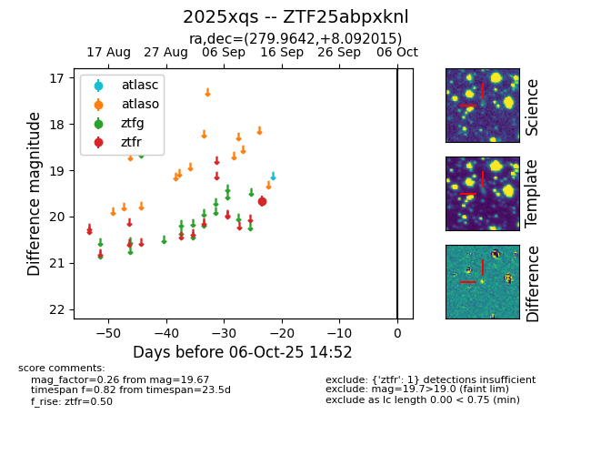

FINK: ZTF25abpxknl
Lasair: ZTF25abpxknl
ALeRCE: ZTF25abpxknl
TNS: 2025xqs
YSE: 2025xqs
ZTF25abpxknl (ztf,fink)
2025xqs (tns,yse)
equatorial (ra, dec) = (279.9642,+8.09201)
galactic (l, b) = (38.8488,+6.23993)

last ztfr=19.67
1 ztfr detections